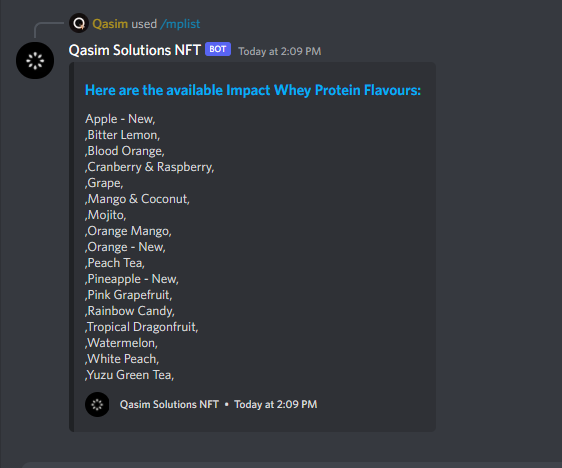

Myprotein Product Monitor
This project is definitely smaller compared to the rest of the projects on the website. A few months ago it was quite difficult to purchase certain flavours of protein from the Myprotein website. Whether this is due to stock shortages or spikes in popularity for those specific flavours I wasn't sure, but I knew I wanted to create a way of being notified when my favorite protein flavours were in stock. For this reason I decided to create a monitor that would be based on Discord, this way I can execute a command to view flavours in stock, but also set alerts for flavours I want to purchase. This proved to be useful as I could make these alerts from my phone without having to be at a computer. Below you will find a showcase and demonstration of the program and on the right side you will find a screenshot showing off more of the program.